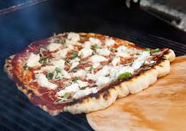

Pizza

Description
Pizza on the grill is a fantastic way to make a pizza at home. The heat of a hot grill is a perfect match for a professional pizza oven. Learn the tricks for making and grilling pizza from scratch with this recipe.Feel fre to use your favorite toppings, but keep in mind not to overload the pizza.
Ingredients
Pizza Dough:
- 1 cup of 110 degrees F water
- 0.25 ounce active dry yeast
- 1 pinch white sugar
- Three, one by three cups all-purpose flour
- 1 tablespoon olive oil
- 2 teaspoon kosher salt
- 2 cloves garlic. minced
- 1 tablespoon chopped fresh basil
Garlic Oil:
- Half cup olive oil
- 1 teaspoon minced garlic
Pizza Toppings:
- 1 by forth of tomato sauce, divided
- 1 cup chopped tomatoes, divided
- one by four cup sliced black olives, divided
- one by four roasted red peppers, drained and chopped, divided
- 2 cups shredded mozzarella cheese, divided
- 4 tablespoon chopped fresh basil, divided
Directions:
- Gather all ingredients
- Make dough: Pour warm water into a large bowl; dissolve yeast and sugar in warm water. Let stand until yeast softens and begins a form a creamy foam, about 5 to 10 minutes.
- Mix in flour, 1 tablespoon olive oil, and salt until dough pulls away from the sides of the bowl.
- Turn onto a lightly floured surface. Knead until smooth, about 8 minutes.
- Place dough in a well-oiled bowl and cover with a damp cloth.
- Set aside to rise until doubled, about 1 hour. Punch down; AKnead in garlic and basil. Set aside to rise for 1 more hour, or until doubled again.
- Meanwhile, make garlic oil: Combine half cup olive oil with minced garlic in a microwave-safe cup or bowl. Heat for 30 seconds in the microwave.
- Preheat an outdoor grill for high heat; brush the grate with garlic oil.
- Make pizzas: Punch down dough and divide in half. Form each half into an oblong three by eight to half thick inch
- Carefully place one piece of dough on the hot grill. Dough will begin to puff almost immediately. When the bottom crust has lightly browned, turn dough over using two spatulas
- Working quickly, brush garlic oil over crust
- Top with half of each of the following: tomato sauce, chopped tomatoes, olives, red peppers, cheese, and basil.
- Close the lid and cook until cheese melts. Remove from grill and set aside to cool for a few minutes. Repeat with piece of dough.
- Enjoy
Thank you
Back to Home Page